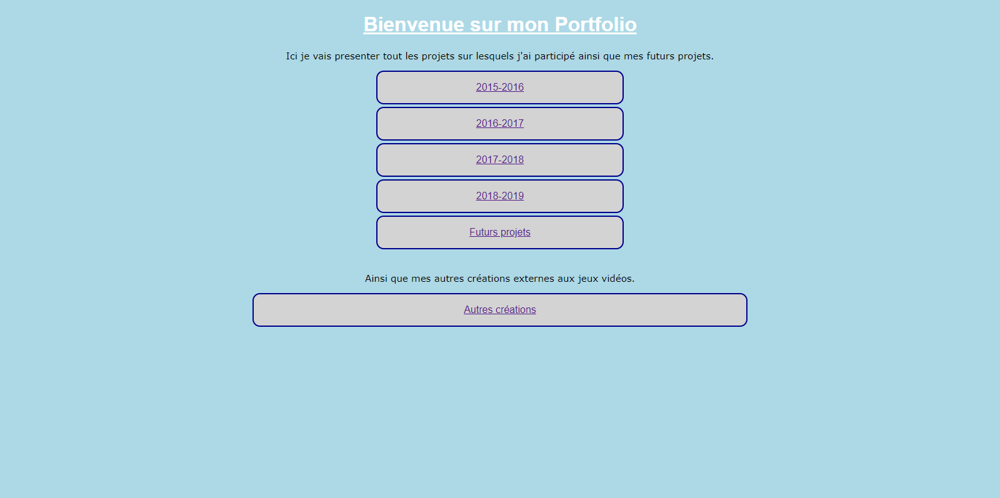

Cyber vs Steam is a text-based game created with the goal of developing a complete game from scratch in 24 hours using Java, to test what I was capable of doing with a language I had no prior experience with.
The concept is simple, as it is basically based on the board game Croque Carotte, with a few changes to make the game more interesting. It can be played by up to 4 players, with the goal of reaching the treasure.
The cyberpunk and steampunk theme was chosen afterwards, with the potential idea of creating a graphical version in the future.
Gra is the final-year project of my third year in Computer Science. It is a scoring arcade game created using the Unity engine.
It is the most complete game I have made so far, as it is fully playable and remains installed on the arcade cabinet at FDS Montpellier.
All the coding was done by my group and me, while all the graphics are composed of royalty-free assets such as the music.
The inspiration comes from games of the 70s and 80s, where the only goal was to reach the top of the high score table.
This is a two-player game that encourages cooperation and communication to achieve the highest score.
One of the game’s major strengths is the addition of a fully procedural and random level generation system, allowing players to never play the same level twice, even after countless hours of gameplay.
The code responsible for the random level generation is available to read
As part of my involvement in a Master’s TER project, I created the draft scene for their final boss. It is a room containing a boss with platforms that spawn randomly from one side of the screen and move across the room to the other side, similar to some bosses in Cuphead.
The boss has five different attacks, with the choice of attack once again being random.
The main script responsible for selecting and executing the attacks is available to read
I also created my portfolio which you're reading at this time
